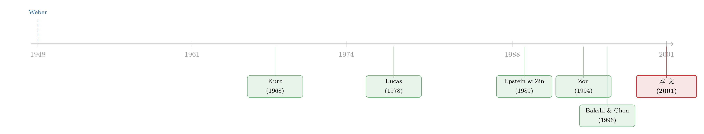

「资本家精神」真能把股价推高吗？——一个被拆成三股力的答案
本文读的是 Smith (2001, Review of Financial Studies)：当人们把「财富本身」当成一种目的（即所谓「资本家精神」），它对股价的影响远不止 Bakshi 和 Chen 说的「抬高风险厌恶」那么简单。Smith 用一类能同时分离风险厌恶、跨期替代、消费—地位替代的偏好，证明资本家精神其实通过两条相反的渠道作用于资产价格：它一边压低时间偏好率、托起价格，一边可能抬高也可能压低风险厌恶——于是一个反直觉的结论浮出水面：资本家精神越浓，风险资产的价格反而可能下跌。
1 引言：一句被韦伯和沃尔夫同时说中的话
先讲一个张力。
社会学大师马克斯·韦伯在《新教伦理与资本主义精神》里写道：人「被赚钱这件事本身所支配，把获取当成人生的终极目的」。七十年后，作家汤姆·沃尔夫在《虚荣的篝火》里用一句更刻薄的话翻译了它：「三十岁还没年入五十万，那都算平庸。」当一种经济现象同时成了伟大社会学家与辛辣讽刺作家的素材，经济学家就该竖起耳朵了——也许，我们这个社会真的把「积累财富」当成了目的本身，而不只是满足物质需要的手段。
这个被称为 资本家精神（spirit of capitalism） 的东西，在经济增长理论里早有一席之地 [Zou (1994)]。但 1989 到 1999 那十年，美国家庭实际净财富涨了 50%，股市走出一轮史无前例的长牛——于是一个自然的问题冒出来了：如果人们渴望积累财富以换取「地位」，这种渴望会不会也悄悄抬高了股价？
Bakshi 和 Chen (1996b) 给过一个极具直觉魅力的回答：如果存在资本家精神，那么财富本身就进入了效用函数，和消费并列。这等价于提高了人们的风险厌恶——为了对冲「失去地位」的风险，人们会减少对风险资产的需求。听起来顺理成章。
但 Smith 这篇文章想说的是：只盯着「风险厌恶」这一条渠道，只讲了半个故事。
2 核心张力：一个参数，扛了太多活
问题出在哪里？出在 Bakshi 和 Chen 用的是 时间可分（time-separable） 的效用函数。在这类偏好里，那个决定效用函数「曲率」的参数，同时身兼数职——它既是风险厌恶系数，又是跨期替代弹性的倒数。换句话说，风险厌恶和愿不愿意把消费在时间上挪来挪去这两件本不相干的事，被一个参数死死绑在了一起。
这正是 Epstein-Zin-Weil 那一脉「递归效用」想解开的结。而 Smith 的洞见是：要看清资本家精神到底怎么影响资产价格，你必须先把三股力气拆开——
- 风险厌恶（risk aversion, γ）：对（无关时间的）赌博的厌恶程度；
- 跨期替代弹性（intertemporal elasticity of substitution, ε）：愿不愿意为了明天而牺牲今天的消费；
- 消费与地位之间的当期替代（intraperiod substitution）：在「吃喝」和「显摆」之间怎么分配。
接着，一个更尖锐的判断浮现出来：资本家精神同时动了这三股力气中的好几个，而它们的方向可能彼此抵消。于是「资本家精神抬高股价」这个看似板上钉钉的结论，就有了被反转的空间。
3 偏好的设定：把「地位」请进效用函数
Smith 用的是一类广义等弹性（generalized isoelastic, GIE）偏好的推广，定义在两种「商品」上：消费 \(C_t\) 与地位 \(S_t\)。离散时间下，效用满足如下递归式：
$$ (1-\gamma)U_t = (1-e^{-\rho\Delta t})\left(C_t^a S_t^b\right)^{\theta(1-\gamma)} + e^{-\rho\Delta t}\left[E_t\,(1-\gamma)U_{t+\Delta t}\right]^{\theta} $$
这里有几样东西要看清楚。当期的「享乐」由聚合函数（aggregator）
$$ X_t = C_t^a S_t^b, \qquad a+b < 1 $$
决定——它把消费和地位捏成一个复合品。\(\gamma\) 是对 \(X_t\) 的（无关时间的）相对风险厌恶系数，\(\varepsilon = 1/(1-\theta)\) 是 \(X_t\) 在无风险路径上的跨期替代弹性，\(\rho\) 是时间偏好率。
这个设定的妙处在于它嵌套了一整排熟悉的模型：
- \(a=1,\,b=0,\,\varepsilon=1/\gamma\)：退回经典的等弹性、时间可分偏好；
- \(b=0,\,\varepsilon\neq1/\gamma\)：没有资本家精神，但是 Epstein-Zin (1989, 1991) 的递归效用；
- \(b>0,\,\varepsilon=1/\gamma\)：有资本家精神，但偏好时间可分——这正是 Bakshi-Chen 的（略加推广的）情形。
那么「地位」\(S_t\) 是什么？跟着 Bakshi-Chen，Smith 取两种最简形式：要么 财富即地位（\(S_t=W_t\)），要么 相对财富即地位（\(S_t=W_t/V_t\)，\(V_t\) 是外生的社会财富指数）。
这里藏着第一个关键结论。在时间可分的特例下，对这类「双商品」偏好，真正度量风险厌恶的不是 \(\gamma\)，而是 $$ R = 1-(a+b)(1-\gamma). $$ 这就是 有效风险厌恶（effective risk aversion）。它确实依赖资本家精神 \(b\)，正如 Bakshi-Chen 所说。但符号取决于 \(\gamma\) 的大小：当 \(\gamma>1\)，\(b\) 增大抬高有效风险厌恶；可当 \(\gamma<1\)，\(b\) 增大反而压低它——这种可能性，被 Bakshi-Chen 的效用函数从一开始就排除掉了。
4 资产定价：一个被「重新加权」的三因子 CAPM
把这套偏好塞进一个连续时间、价格服从向量扩散的资产定价模型，Smith 得到了全文的招牌结果（命题 1）。在 \(\Delta t\to 0\) 的连续时间极限下，资产 \(j\) 的均衡风险溢价为：
其中 \(\sigma_{j,c}, \sigma_{j,w}, \sigma_{j,v}\) 分别是资产 \(j\) 的收益率与消费、财富、社会财富指数增长率的条件协方差。
这就是一个三因子 CAPM——形式上和 Bakshi-Chen 一样。但关键的不同在于：因子权重不再只由地位偏好 \(a,b\) 决定，而是同时被风险厌恶 \(\gamma\) 和跨期替代 \(\varepsilon\) 重新加权。
它优雅地嵌套了两个有影响力的特例。没有资本家精神（\(b=0\)）但在意不确定性的时点（\(\gamma\neq1/\varepsilon\)）时，退回 Epstein-Zin 的两因子模型（其 Eq. 2）：
$$ \mu_{j,t} - r_0 = \frac{1-\gamma}{\varepsilon-1}\,\sigma_{j,c} + \frac{\varepsilon\gamma-1}{\varepsilon-1}\,\sigma_{j,w}. $$
反过来，有资本家精神（\(b\neq0\)）但偏好时间可分时，又回到 Bakshi-Chen 命题 1（其 Eq. 12）：
$$ \mu_{j,t} - r_0 = [1-a(1-\gamma)]\,\sigma_{j,c} - b(1-\gamma)\,\sigma_{j,w} + b(1-\gamma)\,\sigma_{j,v}. $$
命题 1 还顺手给出一个干净的推论：当 \(\gamma=1\)（对数风险偏好）时，无论人们对消费时点或地位的偏好如何，静态 CAPM 都成立——风险溢价只取决于资产与市场（这里是财富）收益的协方差。对数这个老朋友，又一次让一切纠缠的参数烟消云散。
5 反转：为什么资本家精神可能压低股价
现在到了真正关键的一步。Smith 把模型搬进一个 Lucas (1978) 式的纯交换经济：单一风险资产（股票），股利服从几何布朗运动，并令「财富即地位」。这样就能解出一个显式的、现值形式的定价公式，把所有纠缠看个透。
要看清机制，先定义三个「有效」参数。除了前面的有效风险厌恶 \(R\)，再加上 有效跨期替代弹性 与 有效时间偏好率：
$$ R = 1-(a+b)(1-\gamma), \qquad E = \frac{\varepsilon}{\varepsilon+(1-\varepsilon)a}, \qquad H = \frac{a\rho}{a+b}. $$
资本家精神 \(b\) 怎么动这三个旋钮？分别求偏导：
$$ \frac{\partial R}{\partial b} = \gamma-1, \qquad \frac{\partial E}{\partial b} = 0, \qquad \frac{\partial H}{\partial b} < 0. $$
读这三个式子，就读懂了整篇文章：\(b\) 对有效跨期替代毫无影响；它必定压低有效时间偏好率（更有耐心、更愿意持有资产 → 抬高价格）；但它对有效风险厌恶的影响符号不定，全看 \(\gamma\) 站在 1 的哪一边。
于是有了观察等价（observationally equivalent） 这个漂亮的论断：一个「有递归效用 + 有资本家精神」的模型，与一个「有递归效用、没有资本家精神、但把时间偏好率/风险厌恶/替代弹性都换成上面那些『有效』值」的模型，在消费和组合行为上完全无法区分。资本家精神就是通过这三个有效参数偷偷起作用的。（这种「换个变量、难题就消失」的把戏，在习惯形成文献里也见过，可参见《把『习惯』从消费里减掉：一道让难题自动消失的换元术》。）
最优组合与消费政策也随之写成了熟悉的形式：
$$ \alpha_t^{*} = \frac{\mu-r_0}{R\sigma_p^{2}}, \qquad C_t^{*} = \left[EH + (1-E)\left(r_0 + \frac{(\mu-r_0)^2}{2R\sigma_p^2}\right)\right]W_t. $$
注意组合需求 \(\alpha_t^*\) 只依赖有效风险厌恶 \(R\)，与有效跨期替代 \(E\) 无关——正如 Weil (1989) 和 Kocherlakota (1996) 早就指出的：决定风险资产需求的是风险厌恶，不是跨期替代。所以资本家精神对组合需求的影响，完全取决于它抬高还是压低了 \(R\)：
$$ \frac{\partial \alpha_t^{*}}{\partial b} = -\frac{\alpha_t^{*}}{R}\frac{\partial R}{\partial b}. $$
\(\gamma>1\) 时 \(\partial\alpha_t^*/\partial b<0\)——这就是 Bakshi-Chen 讲的、人人都觉得顺理成章的故事：资本家精神浓了，人更怕风险，少买股票。可一旦 \(\gamma<1\)，符号翻转，人反而多买风险资产。
而消费呢？关键在于「风险」对消费的传导由 \(E\) 决定（Weil 1989）：
$$ \frac{\partial C_t^{*}}{\partial b} = E W_t \frac{\partial H}{\partial b} + (E-1)W_t\,\alpha_t^{*2}\,\frac{\sigma_p^2}{2}\frac{\partial R}{\partial b}. $$
第一项是「没耐心」效应：\(b\) 增大压低 \(H\)，消费下降。第二项是「风险」效应，符号取决于 \((1-\varepsilon)(1-\gamma)\) 这个乘积——也就是风险厌恶与跨期替代意愿的交互。当 \(\varepsilon<1\) 且 \(\gamma<1\) 时，风险效应与没耐心效应方向相反：若基础风险 \(\sigma_p^2\) 足够小，消费会先随 \(b\) 下降、再回升，画出一条 U 形曲线。
把这些拼起来代入定价公式，反转就坐实了：当人们足够风险厌恶、又不愿在时间上替代消费时，资本家精神的增强可能真的压低风险资产的价格。一个本以为「越想发财、股价越高」的故事，被三股力气的拉扯，掰出了相反的可能。
（资本家精神的近亲是「相对财富偏好」——怕的不是绝对的穷，而是比别人穷。这条线如何能把价格推成泡沫，可参见《怕的不是亏钱，是「跟大家一起穷」——理性人如何亲手吹起一个泡沫》。）
6 文献脉络
这条研究的源头不在金融，而在社会学与增长理论。韦伯 (1948) 把「资本家精神」立为一个命题；Kurz (1968) 最早把财富作为一个独立的论元放进效用函数，发现它压低时间偏好率；Zou (1994, 1995) 在增长与储蓄的框架里继续推进这条「财富进效用」的非随机模型。
另一条线是偏好结构的革命。Epstein-Zin (1989, 1991) 与 Weil (1989, 1990) 用递归效用，把风险厌恶与跨期替代弹性解开——这正是后来一切「分离三股力」工作的前提。Lucas (1978) 则提供了求解资产价格的经典交换经济框架。

把这两条线接到资产定价上的，是 Bakshi-Chen (1996b)：他们率先把资本家精神写进股市定价，得到「抬高风险厌恶」的渠道。Smith 这篇正好站在两条线的交汇点——他保留了 Bakshi-Chen 的「财富进效用」，却换上 Epstein-Zin 的递归骨架，于是 Bakshi-Chen 与 Epstein-Zin 都成了他的特例，而那个被忽略的「时间偏好率渠道」和「符号可反转的风险厌恶渠道」，第一次被同时摆上了台面。
7 评论与延伸（Q&A + 研究方向）
(a) 几个可能的疑问
Q：这篇文章到底和 Bakshi-Chen 差在哪？一句话能说清吗？
Bakshi-Chen 用时间可分偏好，逼着「风险厌恶 = 跨期替代弹性倒数」，所以资本家精神只能通过抬高风险厌恶起作用，且方向单一（抬高价格的风险溢价、压低风险资产需求）。Smith 换成递归效用，松开这个绑定，于是冒出两条新渠道：压低时间偏好率（必定抬价），以及一个符号取决于 \(\gamma\) 的风险厌恶渠道。结论从「单调」变成「可能反转」。
Q：「有效风险厌恶」\(R=1-(a+b)(1-\gamma)\) 是怎么来的？凭什么它而不是 \(\gamma\) 才是真正的风险厌恶？
因为效用其实定义在复合品 \(X=C^aS^b\) 上，而度量风险厌恶要看效用函数的「最不凹变换」（least concave transformation, Debreu 1976）。在多商品环境里，序数偏好（\(a,b\) 的取值）与对风险的厌恶必须分开，提取出来的相对风险厌恶就是 \(R\) 而非 \(\gamma\)。\(\gamma\) 只是对聚合品的曲率，\(R\) 才是对终端财富/复合品赌博的真实厌恶。
Q：为什么资本家精神「必定」压低时间偏好率，却对跨期替代「毫无」影响？
\(H=a\rho/(a+b)\) 对 \(b\) 求导恒为负——直觉是：把财富/地位也当成目的，等于给「未来」额外加了权，人变得更有耐心。而有效跨期替代 \(E=\varepsilon/(\varepsilon+(1-\varepsilon)a)\) 里根本不含 \(b\)，只含消费份额 \(a\)，所以 \(\partial E/\partial b=0\)。这正是把三股力拆开后才看得清的事。
Q：\(\gamma<1\)（资本家精神反而压低风险厌恶、刺激买股）现实吗？还是纯数学可能性？
这是诚实的软肋。Bakshi-Chen 的设定要求 \(\gamma_{BC}\geq1\)、\(\lambda_{BC}>0\)，把这种情形直接排除；Smith 的贡献之一就是不必这样限制参数空间。但 \(\gamma<1\) 是否经验上成立，文章没有校准、没有数据，留作开放问题。它更像是「逻辑上不该被先验排除」的提醒，而非「现实中确实如此」的断言。
Q：这是个纯理论模型，没有任何实证，那它的价值在哪？
价值在于「绘制渠道地图」（the paper charts the channels）。它告诉实证者：要识别资本家精神对股价的影响，光估一个风险厌恶系数不够，必须同时拿到对跨期替代弹性 \(\varepsilon\) 和地位偏好 \(b\) 的独立约束，否则你会把三条方向不同的渠道混成一个说不清符号的净效应。
Q：社会财富指数 \(V_t\) 为什么可以当外生处理？这会不会回避了最难的部分？
会，且作者坦承这是为了 tractability。三条限制——个人太小不影响 \(V_t\)、所有人共享同一个 \(V_t\)、\(V_t\) 服从扩散——让我们绕开了「社会财富在一般均衡里如何内生决定」这个真正困难的问题。这是模型的边界，也是后续工作的入口。
(b) 几个可能的研究问题与提案
1. 把「资本家精神三渠道」搬到公司债与信用利差
【经济故事】如果投资者在意「地位/相对财富」，那么对违约这种尾部、系统性损失的厌恶可能被放大，信用利差里也许含有一块「地位溢价」。而递归效用早已被用来解释信用利差的期限结构与权益溢价的纠缠。 【可行性】中。理论上直接：把 Smith 的三因子定价核套到含违约的结构模型上即可。实证识别难——需要独立度量 \(\varepsilon\) 与 \(b\)，可考虑用消费/财富面板加期权隐含矩做联合约束。doable 但工作量大。
2. 外资持有人会改变一国的「社会财富指数」吗？
【经济故事】Smith 的 \(V_t\) 是「典型本国人的财富」。当一国股市大量被外资持有，本地投资者的「攀比对象」是否还是本国财富？外资进入可能稀释「相对财富」渠道，从而改变本地风险溢价。 【可行性】中偏低。机制有趣，但「社会财富指数」难以观测，且要把外资持股的外生变动找出来（如指数纳入、可投资度改革）。识别需要准自然实验，数据可得但映射到 \(V_t\) 的桥不好搭。
3. 用消费—地位替代弹性解释「股权溢价之谜」的横截面
【经济故事】命题 1 说因子权重依赖 \(a\)（消费份额）。不同人群（高净值 vs 普通家庭）的 \(a\) 不同，意味着同一资产对他们的隐含风险溢价不同。这能否解释持有人结构差异与定价差异？ 【可行性】中。需要分人群的消费与持仓微观数据（如 PSID/SCF 配合持仓）。结构估计 \(a,b,\gamma,\varepsilon\) 是硬骨头，但前人对递归效用的校准方法可借鉴。
4. 「地位攀比」与流动性需求
【经济故事】若失去地位的恐惧抬高了有效风险厌恶，投资者在压力时期可能更急于变现「安全」资产，放大流动性螺旋。资本家精神是否是危机中流动性骤降的一个偏好侧推手？ 【可行性】低偏中。理论上可把 Smith 的偏好嵌入带交易成本/流动性约束的模型；但把「地位偏好」与「流动性冲击」在数据里分离极难，更适合先做理论。
参考文献
Bakshi, G., and Z. Chen (1996b). The Spirit of Capitalism and Stock-Market Prices. American Economic Review 86(1), 133–157.
Debreu, G. (1976). Least Concave Utility Functions. Journal of Mathematical Economics 8, 337–360.
Epstein, L., and S. Zin (1989). Substitution, Risk Aversion, and the Temporal Behavior of Consumption and Asset Returns: A Theoretical Framework. Econometrica 57, 937–969.
Epstein, L., and S. Zin (1991). Substitution, Risk Aversion, and the Temporal Behavior of Consumption and Asset Returns: An Empirical Analysis. Journal of Political Economy 99, 263–286.
Kocherlakota, N. (1996). The Equity Premium: It's Still a Puzzle. Journal of Economic Literature 34, 42–71.
Kurz, M. (1968). Optimal Economic Growth and Wealth Effects. International Economic Review 9, 348–357.
Lucas, R. (1978). Asset Prices in an Exchange Economy. Econometrica 46, 1429–1445.
Smith, W. T. (2001). How Does the Spirit of Capitalism Affect Stock Market Prices? Review of Financial Studies 14(4), 1215–1232.
Weber, M. (1948). The Protestant Ethic and the Spirit of Capitalism. Translated by Talcott Parsons. George Allen & Unwin, London.
Weil, P. (1989). The Equity Premium Puzzle and the Risk-Free Rate Puzzle. Journal of Monetary Economics 24, 401–421.
Zou, H. (1994). The Spirit of Capitalism and Long-Run Growth. European Journal of Political Economy 10, 279–293.
Zou, H. (1995). The Spirit of Capitalism and Savings Behavior. Journal of Economic Behavior and Organization 28, 131–143.